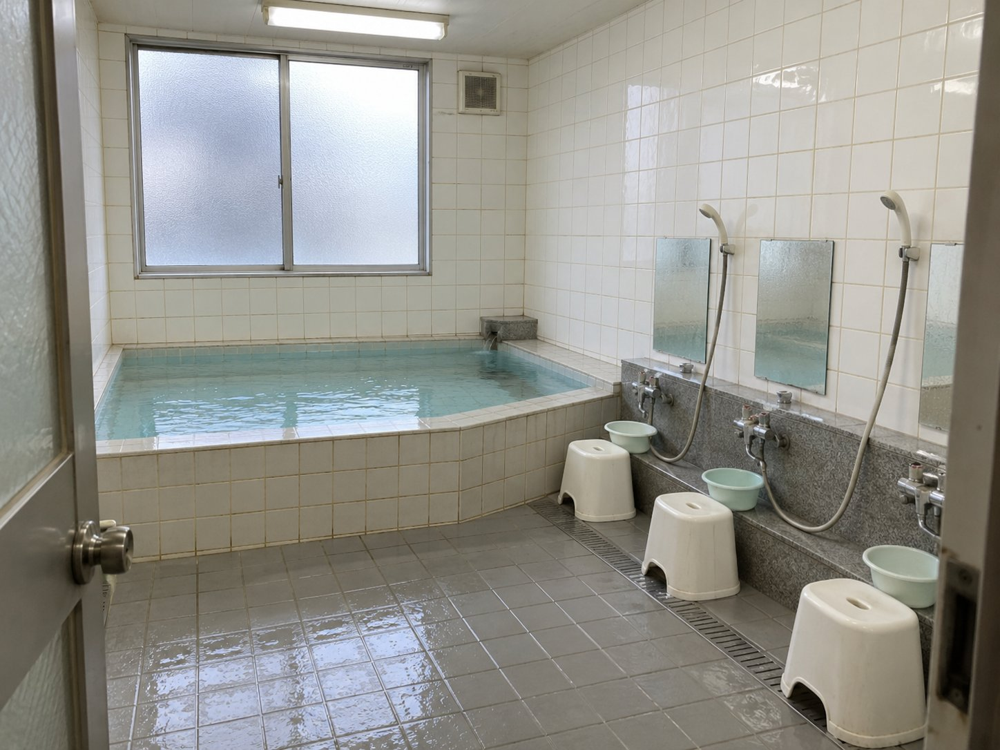
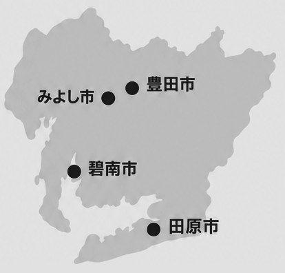

① 自動車部品の組付け・組立
- 完成
した パーツ を 車体 の 決められた 位置 に 取り付ける 作業 - ドア・
シート・ ハンドル・ タイヤ など の 組付け - 電動工具
を 使用 した ネジ 締め や 部品 の 固定 - 配線や各種パーツの取り付け
ソクワーク工場
応募はこちら正社員登用は過去5年間で1,022名！
応募はWEBで45秒・無料
トヨタ期間従業員への応募はこちら応募無料｜面接
赴任手当 3万円
月収 23万8,530円
月収 31万6,580円
＋ 入社時特別手当 40万円
3〜6ヶ月目も 月収26万〜33万円台
月収 30万5,430円
6ヶ月満了特別手当 60万円
満了慰労金 21万5,900円
満了報奨金 19万500円
総額 100万円以上！
8〜12ヶ月目も 月収29万〜32万円台
年間のお給料
560万円！！
月収 28万3,130円
満了慰労金 32万7,500円
満了報奨金 19万500円
総額 80万円以上！
※
未経験
応募無料｜面接
家賃の支払いで生活がキツい

趣味のお金をもっと増やしたい
工場ワークに自信がない
生活費が重くて、なかなか貯金ができない。
働きたい気持ちはあるけれど、初めての仕事に飛び込むのは不安。
その気持ち、よく分かります。
家賃の支払いで 生活がキツい
寮の家賃・水道費・光熱費 すべて0円
趣味のお金を もっと増やしたい
年収例560万円以上／ 入社祝い金総額100万円
工場ワークに 自信がない
入社時の研修で、 工具の使い方からイチから学べる
無料
登用試験
寮費0円で、1年後の自分へ
トヨタ期間従業員への応募はこちら応募無料｜面接
Q. 住むところは?
すべて0円

人気

共同
一人部屋の寮で、寮費0円
トヨタ期間従業員への応募はこちら応募無料｜面接
トヨタ

※配属先により異なります
力仕事以外
入社時
応募無料｜面接
＼未経験から好待遇！／
月収例316,580円
※
| 期間 | 満了慰労金 | 満了報奨金 |
|---|---|---|
| 6ヶ月満了 | 207,400円 | 183,000円 |
| 12ヶ月満了 | 305,000円 | 183,000円 |
| 18ヶ月満了 | 329,400円 | 183,000円 |
| 24ヶ月満了 | 353,800円 | 183,000円 |
| 30ヶ月満了 | 378,200円 | 183,000円 |
| 35ヶ月満了 | 396,000円 | 183,000円 |
連続2交替制勤務／実働7時間35分
1週間ごと
| 1直 6:25〜15:05 |
2直 16:00〜翌0:40 |
|
|---|---|---|
| 6: | 作業 | 16:00 |
| 8:30 | 休憩 | 18:05 |
| 8:40 | 作業 | 18:45 |
| 10:40 | 休憩 | 20:15 |
| 11:25 | 作業 | 21:00 |
| 13:25 | 休憩 | 23:00 |
| 13:35 | 作業 | 23:10 |
| 15: | 24:40 |
※
週休2日制（土日）
GW・
勤務地

トヨタ
実際
過去
応募無料｜面接
働く
連続
寮
トヨタ
リアルな声をお届け！

資格

入社後、

元
次は、あなたの番です
トヨタ期間従業員への応募はこちら応募無料｜面接
転職が初めてでも安心
ソクワーク
01
トヨタ期間工に応募！WEBですぐに応募できます。
トヨタ期間従業員へのWEB応募はこちら※応募に関わる利用規約はこちら
02
ソクワーク
※営業時間：10時〜19時
ソクワークサポート：
選考
03
志望動機
ソクワークサポート：
面接
04
最短
ソクワークサポート：
面接前
05
1週間以内
ソクワークサポート：
合格
06
応募
キャリア
応募無料｜面接
年収例560万円以上・入社祝い金総額100万円・寮費0円
応募フォームはこちら